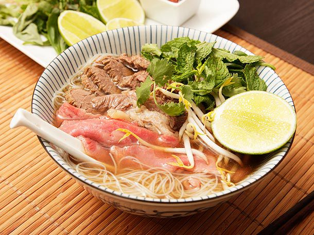

Beef pho
All recipes

Description
Roast beef bones, fresh vegetables, and warm spices make for a soul-warming beef pho. Read
more here.
Ingredients
- 2 large onions, split in half
- 1 large hand ginger (about 6 inches long), split in half lengthwise
- 3 pounds beef shin, with meat attached
- 2 pounds oxtail, cut into 1/2 to 1-inch thick slices
- 1 pound boneless beef chuck
- 1 pound beef brisket
- 3 whole star anise pods
- 1 cinnamon stick
- 1 teaspoon fennel seeds
- 4 cloves
- 1 teaspoon coriander seeds
- 1/4 cup fish sauce, plus more to taste
- 2 tablespoons sugar (preferably yellow rock sugar)
- Kosher salt